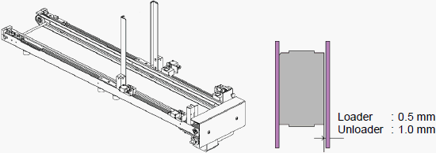
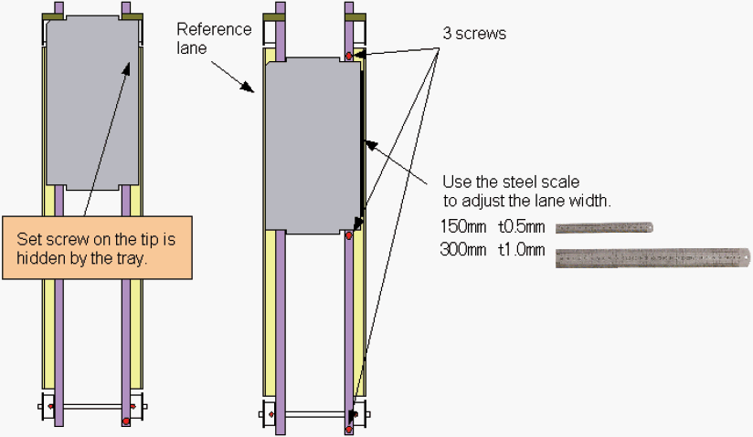

A6-2 How to adjust the Loader / Unloader lane width ( 2 )
Lane width adjustment for NS-7000
NS-7000 series Loader / Unloader: Lane Width Adjustment
The loader / unloader lane widths are usually adjusted based on the standard JEDEC tray width.
When a tray is placed, there are the following spaces.
Loader : 0.5 mm
Unloader : 1.0 mm
If some trays are stuck in while conveying, adjust the lane width.

1. Loosen the 3 screws of the right side lane (viewed from operation side). To adjust only the tip side, loosen one screw on the tip.
2. Place a tray and adjust the width. Use the scale (150 mm for Loader / 300 mm for Unloader) to make the width adjustment easy.
3. After adjusted the lane width, tighten the 3 screws of the right side lane (viewed from operation side).

< NOTE > Never move the reference lane. Otherwise, the mechanical adjustment and re-teaching are required.